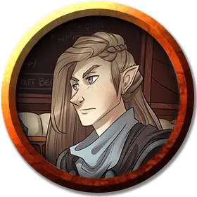

Ауспиция Дран
Auspicia Dran
Средний Гуманоид (Полуэльфийка), нейтрально-добрый, именной НИП

Класс Доспеха 15 (кольчуга)
Хиты 52 (8к8 + 16)
Скорость 30 футов
| мод | спас | ||
|---|---|---|---|
| СИЛ | 16 | +3 | +3 |
| ЛОВ | 14 | +2 | +2 |
| ТЕЛ | 14 | +2 | +2 |
| мод | спас | ||
|---|---|---|---|
| ИНТ | 15 | +2 | +2 |
| МДР | 12 | +1 | +1 |
| ХАР | 10 | +0 | +0 |
Навыки Атлетика +5, Восприятие +3
Чувства пассивное Восприятие 13
Языки Общий, Эльфийский
Опасность 2 (450 опыта)
Бонус мастерства +2
Особенности
Врождённое колдовство (Псионика). Способность к заклинаниям Ауспиции основана на Интеллекте. Ауспиция может накладывать следующие заклинание без использования материальных компонентов:
• Неограниченно: обнаружение мыслей [detect thoughts];
• 1/день: гадание [augury].
Действия
Мультиатака. Ауспиция совершает две атаки.
Длинный меч. . Рукопашная атака оружием: +5 к попаданию, досягаемость 5 футов, одна цель. Попадание: 7 (1к8 + 3) рубящего урона или 8 (1к10 + 3) рубящего урона, если используется двумя руками.
Легкий арбалет. Дальнобойная атака оружием: +4 к попаданию, дистанция 80/320 футов, одна цель. Попадание: 6 (1к8 + 2) колющего урона.
Описание
Младшая сестра Омина Драна, полуэльфийка Ауспиция Дран, в детстве рассталась с жизнью, когда ее схватило таинственное существо под названием Блуждающий склеп. Проведя долгие годы в каком-то мрачном сне внутри склепа, она в конце концов была спасена неустанными усилиями своего брата Омина и доблестью его тщательно подобранной команды "С". Теперь, благополучно вернувшись в мир - и с уничтожением лже Ауспиции, - она сосредотачивается на попытке раскрыть свою собственную личность и справиться с продолжающимися осложнениями, возникающими в результате ее испытаний.
Когда Ауспиция вышла из Блуждающего склепа, она несла в себе растущий уровень псионической силы. Она не может не читать чужие мысли, но обнаруживает, что ношение бриллиантовой серьги помогает подавить эту невольную способность. Эта магия также оставила ее связанной со склепом способом, который она не понимает, даже несмотря на то, что это дает ей случайные воспоминания о других, все еще запертых там, и ведения далеких мест. В бою она проявляет инстинктивное знание событий до того, как они произойдут, часто используя эту способность, чтобы остановить бой, что поощряет переговоры. Но она только начала полностью раскрывать свой потенциал предвидения.